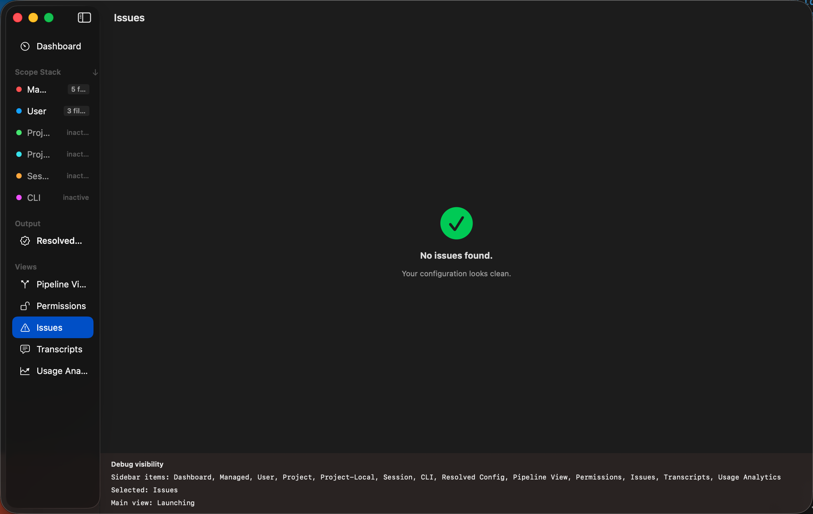

Issues
The Issues view collects all validation problems found during configuration parsing and resolution.
Open it from the sidebar or press ⌘4.

Severity Levels
- Errors — Problems that may prevent Claude Code from
using a configuration file correctly. Examples: JSON syntax errors, missing required fields,
inaccessible files.
- Warnings — Non-critical issues that deserve attention.
Examples: invalid field types (wrong type but parseable), duplicate definitions, deprecated keys.
- Info — Informational notices. Examples: unknown fields
preserved for forward compatibility, unresolved references.
Filtering
Use the severity filter buttons at the top to show only errors, only warnings, or only info-level
issues. The summary header shows counts for each level.
Sidebar Badges
The sidebar shows issue counts in two places:
- Per-scope badges (orange) on each scope row — showing how many issues originated from that scope's files
- A total badge on the Issues row — red if any errors exist, orange for warnings only
Note: An empty Issues view means your configuration is clean — no problems were
detected during parsing or resolution.